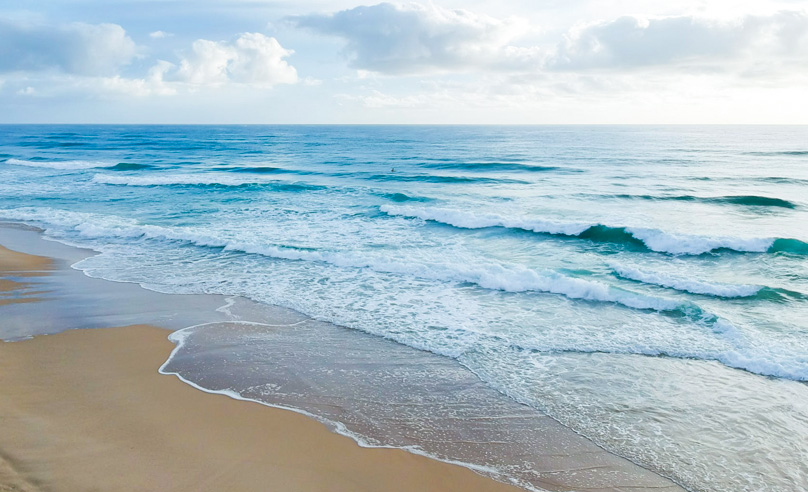
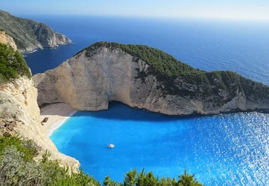

景区简介

繁忙的都市生活给人们带来了压力与浮躁，有调查显示近40.4%的人希望远离喧嚣，避开拥挤，向往着从城市搬到农村，呼吸自然的空气，寻找内心的声音。
海水清澈，沙滩广阔，沙质细软，是现代都市中不可多得的海边休闲之地；给都市人一个享受大自然拥抱大自然的居所，恬静度过每一个假期。

无闹市的繁华与喧嚣，却有美丽的阳光、沙滩与海浪。她的环海沙滩延绵千里，海滨浴场洁净开阔，蓝色的大海碧波万顷，茂盛的椰树婆娑起舞。放眼望去，海滨沙滩被鲜艳的太阳伞装点得五彩缤纷，游艇犁出浪花，降落伞迎风绽开，墩洲岛巨浪拍岸,千人烧烤场篝火通红。小梅沙是这般色彩明快，生机盎然，怎不令人心旷神怡、流连忘返。
环境幽雅，空气清新，秀山美水给小梅沙增添了许多灵秀之气，慷慨的大自然把她造化成都市人理想的海滨旅游度假胜地。